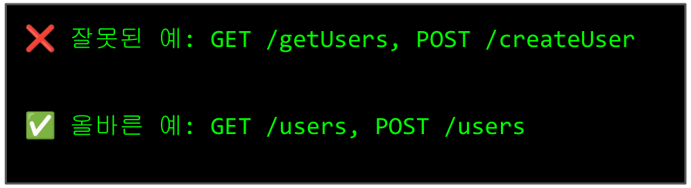
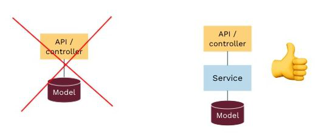
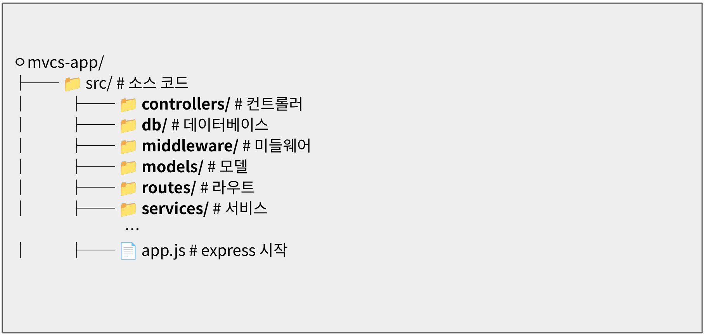

2026학년도 2학기 실전웹서비스개발
실전 웹서비스개발 – 6주차
Node.js Express 프레임워크를 이용한 웹 서버 개발
LECTURE 06
학습 목표
- 서버 개발과 Node.js
- Node.js와
- REST API 설계 원칙과 구현 방법
- 서버 아키텍처 설계(MVC / MVCS 패턴)
- TDD(Test Driven Development)
01
서버와 Node.js
웹서비스의 구조
- 클라이언트-서버 모델 : 클라이언트와 서버 간의 요청(request)과 응답(response)을 통해 데이터를 주고받는 구조
- 클라이언트: 브라우저, 모바일 앱, 또는 다른 서버
- 서버: 요청을 처리하고 적절한 응답을 반환하는 역할
- 네트워크: 클라이언트와 서버 간의 데이터를 전송하는 매개체(World Wide Web)
- 프로토콜
- HTTP/HTTPS: 웹 브라우저와 서버 간의 데이터 통신 규약. HTTPS는 HTTP에 SSL/TLS를 추가하여 보안을 강화한 프로토콜.
- REST: Representational State Transfer의 약자로, HTTP 프로토콜을 기반으로 하는 아키텍처 스타일. RESTful 서비스는 URL을 통해 리소스를 식별하고, HTTP 요청(GET, POST, PUT, DELETE)을 사용하여 리소스를 조작.
- 데이터 형식
- JSON (JavaScript Object Notation)
서버의 역할
- 클라이언트 요청 수신
- HTTP 요청(URI·메서드·헤더/바디)을 받아 라우팅 규칙에 맞는 핸들러로 전달
- 데이터 처리 및 계산
- 입력을 검증하고 비즈니스 로직을 수행하며 필요 시 연산·외부 API 호출을 실행
- DB와 통신
- CRUD 쿼리로 영속 데이터를 조회·저장·수정·삭제
- 처리 결과 반환
- 상태코드·헤더를 설정하고 결과를 JSON/HTML/파일 등으로 직렬화해 응답
- 인증/인가 처리
- 사용자 신원을 확인(인증)하고 권한을 검사해 자원 접근을 허용/차단
서버 개발 언어 별 비교
| 언어 | 프레임워크 | 장점 | 사용 사례 |
|---|---|---|---|
| Node.js | Express, NestJS, Fastify | 빠른 I/O, 풀스택 JS | 실시간 앱, API 서버 |
| Python | FastAPI, Django, Flask | 쉬운 문법, AI/ML | 데이터 분석, 웹 앱 |
| Java | Spring | 안정성, 대규모 | 엔터프라이즈 |
| PHP | Laravel | 웹 특화, 호스팅 | CMS, 블로그 |
- 용도에 따라
- 프론트와 한 언어로 빠르게: Node.js
- 데이터/AI와 붙는 API: Python
- 금융/대기업 표준·복잡 도메인: Java 또는 .NET
- 성능·배포 단순성(단일 바이너리): Go
- 지속적 고성능·안전성: Rust
- 콘텐츠·마케팅·백오피스 빨리: PHP / Ruby(Rails)
Node.js
- Node.js
- Node.js는 Chrome V8 JavaScript 엔진으로 빌드된 JavaScript 런타임 환경
- 웹 브라우저 밖에서도 JavaScript를 실행할 수 있게 해주는 프로그램
특징
- 1. JavaScript 런타임
- 브라우저가 없어도 컴퓨터에서 JavaScript 실행 가능
- 서버 프로그래밍, 데스크톱 앱, 명령줄 도구 개발 가능
- 2. 비동기 I/O (Non-blocking)
- 동시에 여러 작업 처리 가능
- 한 작업이 끝날 때까지 기다리지 않고 다른 작업 진행
- 높은 성능과 효율성
- 3. 단일 스레드 이벤트 루프
- 하나의 스레드로 많은 연결을 효율적으로 처리
- 메모리 사용량이 적음
- 4. NPM 생태계
- 세계 최대 오픈소스 라이브러리 생태계
- 100만개 이상의 패키지 사용 가능
Node.js
- 고성능의 비동기 애플리케이션 작성을 위한 JavaScript 엔진
- Ryan Dahl이 최초 작성 후 2009년 5월 27일 처음 공개된 오픈소스 프로젝트 https://github.com/nodejs/node
- V8 엔진의 JIT(Just-In-Time) 컴파일을 쓰는 하이브리드(인터프리터+컴파일러) 런타임
- V8 엔진
- 구글에서 C++ 만든 오픈소스 자바스크립트/웹어셈블리 엔진
- JavaScript 코드를 4단 구조로 빠르게 실행
- 파싱→바이트코드→JIT 컴파일→실행
- 인터프리터처럼 바로 시작해서 초기 응답이 빠름
- 자주 사용되는 코드를 네이티브 코드로 즉석 컴파일 함
- Chrome/Edge(Chromium 계열) 브라우저, Node.js
- Chromium
- Google이 주도하는 오픈소스 웹브라우저 프로젝트 https://blog.chromium.org/
- 최근 공개된 많은 브라우저들이 Chromium을 기반으로 개발 됨
02
서버 개발 핵심 개념
HTTP/HTTPS
- HTTP = HyperText Transfer Protocol
- 하이퍼텍스트를 빠르게 교환하기 위한 프로토콜
- 서버와 클라이언트의 사이에서 어떻게 메시지를 교환할지를 정해 놓은 규칙
- 각 HTTP 요청을 독립적으로 처리 이전 요청의 정보를 연결·기억하지 않음(Stateless: 무상태)
- 필요한 맥락은 매 요청마다 함께 전송
- 특징
- 확장성: 어떤 요청이든 아무 서버가 처리 가능.
- 장애 격리: 한 서버가 내려가도 세션 날아가지 않음.
- 같은 요청을 다른 서버가 받아도 결과 동일
- HTTPS = HyperText Transfer Protocol Secure
- 웹 브라우저와 웹사이트 간의 데이터 통신을 암호화하여 보안을 강화한 프로토콜
- HTTP가 데이터를 암호화하지 않고 전송하여 해킹에 취약했던 문제를 해결하기 위해 개발
HTTP 요청(Request) 구조
POST /api/users HTTP/1.1
Host: example.com
Content-Type: application/json
Authorization: Bearer token123
{
"name": "홍길동",
"email": "hong@example.com"
}| 구성 요소 | 설명 | 예시 |
|---|---|---|
| Method | 요청 종류 | GET, POST, PUT, DELETE |
| URL | 요청 경로 | /api/users |
| Headers | 부가 정보 | Content-Type, Authorization |
| Body | 전송 데이터 | JSON, Form Data |
HTTP 응답(Response) 구조
HTTP/1.1 200 OK
Content-Type: application/json
Cache-Control: no-cache
{
"success": true,
"message": "사용자가 생성되었습니다",
"data": {
"id": 1,
"name": "홍길동"
}
}주요 상태 코드
| 2xx 성공 | 4xx 클라이언트 오류 | 5xx 서버 오류 |
|---|---|---|
200 OK 201 Created | 400 Bad Request 404 Not Found | 500 Server Error 503 Service Unavailable |
JSON
- JSON = JavaScript Object Notation
- 서버와 클라이언트 간 데이터를 주고받는 데이터 직렬화 형식
- 사람이 읽기 쉬운 텍스트
- 기계가 파싱 쉬움
- JSON 규칙
- 값 타입 6개: string, number, boolean, null, object, array
- 문자열은 반드시 쌍따옴표 "..." (홑따옴표 X)
- 주석 없음(//, /* */ 모두 금지)
- 마지막 요소 뒤 쉼표 금지(trailing comma X)
{
"name": "홍길동",
"age": 25,
"isStudent": true,
"courses": ["웹개발", "데이터베이스"],
"address": {
"city": "서울",
"zip": "12345"
}
}JaveScript JSON 파싱과 직렬화
// Parse (문자열 → 값) const obj = JSON.parse(jsonString); // Stringify (값 → 문자열) const s = JSON.stringify(obj, null, 2); // Replacer로 필드 필터/정렬 const s2 = JSON.stringify(obj, ["id", "title"], 2);
REST API
- REST = REpresentational State Transfer
- 리소스 중심의 HTTP 기반 아키텍처 스타일
- 자원을 이름으로 구분하여 해당 자원의 상태를 주고받는 방식으로 개발
- 구성 요소
- 자원(Resource) : HTTP URI
- 자원에 대한 행위(Verb) : HTTP Method
- 자원에 대한 행위의 내용 (Representations) : HTTP Message Pay Load
- REST API
- REST의 원리를 따르는 API
- 표준 HTTP를 활용해 예측 및 확장 가능한 API 설계하는 것이 목표
- 설계 원칙
- URL은 리소스를 나타냄 (동사X, 명사O)
- 행동은 메서드로 표현
- 무상태(Stateless): 각 요청은 독립적
- 일관된 인터페이스: 예측 가능한 구조

라우팅(Routing)
- 서버가 받은 요청을 실제 처리할 핸들러 함수에 연결하는 과정
- 형식 키: 메서드(GET/POST/…), 경로(/users/:id)
- 서버 프레임워크가 라우팅 테이블을 만들어 실행
- 멱등성(Idempotency)
- GET, PUT, DELETE는 여러 번 실행해도 결과가 같아야 함
- 타임아웃·중복전송이 일어나도 중복 생성/결제를 막아야 됨
- 큐/리트라이(적어도 한 번 전달) 환경에서 중복 처리 방지
- 멱등한 요청은 안전하게 캐시·재전송 가능
- 롤백/재처리가 쉽게(운영/장애 대응)
| HTTP Method | CRUD | 설명 | 예시 |
|---|---|---|---|
| GET | Read | 리소스 조회 | GET /users (모든 사용자) GET /users/1 (특정 사용자) |
| POST | Create | 리소스 생성 | POST /users (새 사용자 생성) |
| PUT | Update | 리소스 수정 | PUT /users/1 (사용자 정보 수정) |
| DELETE | Delete | 리소스 삭제 | DELETE /users/1 (사용자 삭제) |
미들웨어
공통 로직을 앞단에서 처리해 라우트의 책임을 최소화하는 요청‒응답 파이프라인의 블록
- 효과
- 책임 최소화: 라우트는 입력 수집 → 서비스 호출 → 응답만 담당.
- 일관성: 인증/검증/에러 포맷을 한 곳에서 통일.
- 재사용성: 같은 규칙을 여러 라우트에 간단히 붙임.
- 테스트 용이성: 공통 로직을 독립적으로 단위 테스트.
- 보안·품질 향상: Helmet, CORS, Rate Limit 등 기본 방어막을 전역 적용.
- 가독성: 코드가 “파이프라인(흐름)”처럼 읽힘.
// 미들웨어 예시
app.use((req, res, next) => {
console.log(`${req.method} ${req.url}`); // 로깅
next(); // 다음 미들웨어로 이동
});MVC 패턴
- Model
- 앱의 데이터 구조와 규칙. 스키마, 검증, DB 접근
- View
- 사용자에게 보여줄 화면 또는 데이터. EJS/React/JSON 등 표현
- Controller
- 요청을 받아 Model에 일 시키고, 결과를 View 또는 JSON으로 응답
- 장점
- 역할 분리로 변경 용이
- 테스트/재사용 용이(서비스/모델 단위 테스트)
- 재사용성: 같은 컨트롤러 로직으로 EJS 페이지와 JSON API를 모두 제공 가능
- 적용
- 서버: Model + Controller(+ Service)로 JSON API 제공
- 클라이언트(View): React(SPA)가 화면 담당
MVCS 패턴
- MVCS(Model‒View‒Controller‒Service)
- MVC에 Service(서비스) 레이어를 추가해 도메인 로직을 컨트롤러 밖으로 분리한 구조
- 왜 Service가 필요한가?
- 컨트롤러 비대화 방지: 요청 흐름만 남기고 복잡한 규칙은 서비스로 이전
- 재사용/테스트 용이: 같은 규칙을 여러 엔드포인트/잡/웹훅에서 재사용, 단위테스트 쉬움
- 여러 모델/외부 API 오케스트레이션: 결제, 알림, 트랜잭션, 캐싱 등
- 권한/검증 일관화: “소유자만 수정 가능” 같은 규칙을 한 곳에

MVCS 패턴

테스트 주도 개발(TDD)
- 테스트 주도 개발(TDD: Test-Driven Development)
- 테스트를 먼저 작성하고, 그 테스트를 통과시키는 최소 코드를 작성한 뒤, 코드를 개선하는 짧은 반복 루프로 개발하는 방법
- 효과
- 버그 빠른 차단: 사양이 코드가 되기 전에 실패 테스트로 드러남
- 리팩터링 안전망: 테스트가 있으니 구조 바꿔도 안심
- 설계 품질: 작은 단위로 분리(함수/레이어링)하게 됨 → MVCS와 잘 맞음
- 문서화: 테스트가 곧 “실행 가능한 예시 문서”
- CI/CD 친화: 깃 푸시 시 자동 검증(파이프라인에 테스트 포함)
- TDD 싸이클 : Red → Green → Refactor
- Red: 기능이 제대로 작동하지 않는 상태를 정의
- Green: 테스트를 통과하는 최소한의 동작 코드를 작성
- Refactor: 코드를 보다 깔끔하고 효율적으로 개선
03
Express 서버 App 개발
Express.js
- Node.js로 RESTful API를 구축하기 위한 백엔드 웹 애플리케이션 프레임워크
- 웹 애플리케이션과 API 구축을 위해 설계
- Node.js의 사실상 표준 서버 프레임워크
- MIT 라이선스에 따라 무료 오픈소스 소프트웨어로 제공 https://github.com/expressjs/express
- 최신 안정화 버전 5.1.0 https://expressjs.com/
순수 Node.js
const http = require('http');
http.createServer((req, res) => {
if (req.url ==='/') {
res.write('Hello World');
} else if(req.url === '/hello') {
res.write('World');
}
res.end();
}).listen(3000);Express.js
const express = require('express');
const app = express();
app.get('/', (req, res) => {
res.send('Hello World');
});
app.get('/hello', (req, res) => {
res.send('World');
});
app.listen(3000);Express 프로젝트 생성
# Express 프로젝트 생성 $ npm install express --save
express 실행 테스트(Hello World)
const express = require('express')
const app = express()
const port = 3000
app.get('/', (req, res) => {
res.send('Hello World!')
})
app.listen(port, () => {
console.log(`Example app listening on port
${port}`)
})Express MVCS 프로젝트
각 폴더와 주요 파일 역할
- server.js : 서버 진입점 - app.js를 불러와 포트 설정 후 app.listen()으로 HTTP 서버를 시작
- src/app.js : Express 앱 설정 - 핵심 미들웨어, 라우터, 에러 핸들러를 연결
- src/controllers : 요청을 받아 파라미터 검증 → 서비스 호출 → 응답 형식화까지 담당하는 계층
- src/data : 초기 더미 데이터, 시드 파일, JSON 리소스 등 코드 없는 정적 데이터 보관소
- src/middleware : 인증, 로깅, CORS, 입력 검증, 에러 처리 등 요청/응답 사이에 끼워 넣는 공용 함수들
- src/models : DB 스키마와 데이터 접근 로직(예: Mongoose Schema/Model, 쿼리 메서드)을 정의
- src/routes : URL 경로와 HTTP 메서드를 컨트롤러에 매핑하는 Express Router 모듈들
- src/services : 비즈니스 로직 계층 - 여러 모델/외부 API를 조합해 도메인 규칙을 구현
- src/utils : 재사용 가능한 작은 헬퍼/유틸 함수 묶음
Render
Git에 올린 코드를 자동으로 빌드·배포해주는 PaaS(Platform-as-a-Service) 클라우드 개발 플랫폼
- 원클릭 배포 & 자동 재배포
- 서비스 타입
- Web Service(Express 등 장기 실행 서버)
- Static Site(정적 호스팅)
- Background Worker
- Cron Job
- Private Service.
- 운영 편의
- 환경변수 관리,
- 프로젝트 1개 무료, 로그/헬스체크, 수평 스케일링 지원.
과제 개요
Express & Render로 만드는 Ajou Campus Foodmap API
- 학습 목표
- Express로 REST API 개발
- MVCS 패턴 학습
- 비동기 처리 & 에러 핸들링 습득
- 테스트 주도 개발 연습
- 필수 구현 사항
- GitHub 저장소에 프로젝트 버전 관리가 바르게 되고 있는가?
- Render에 GitHub 저장소가 연결되어 자동 배포가 이루어 지고 있는가?
- Express로 개발한 서버 모듈이 모두 바르게 동작하는가?
- pwd-week3 React App이 Render 서버로부터 데이터를 받아오는가 ?
마감일원본 자료 표기
9월 28일 11시 59분 까지- GitHub URL
- (예: https://github.com/username/pwd-week4)
- Render App URL
- (예: https://pwd-week4-[username]..onrender.com)
- Netlify App URL(Render 서버 연동)